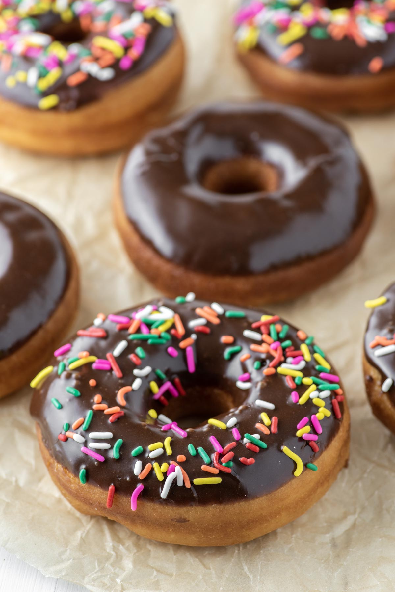

Who doesn't like a chocolate donut!?
In this recipe we will explain how you can make a classic chocolate glazed donut from scratch.
You will need just a few ingredients and in less that 5 minutes you are making chocolate glazed donuts!
Ingredients
- 1k Powdered sugar
- 125g Water
- 250g Cocoa powder
- 15g Butter
- 25g Milk
- 2 caps Vanilla extract
Steps
- Weigh out all ingredients
- Sift the powdered sugar and cocoa powder
- Mix together
- Add the wet ingredients to the powdered sugar and cocoa and mix until all lumps are gone.
Home